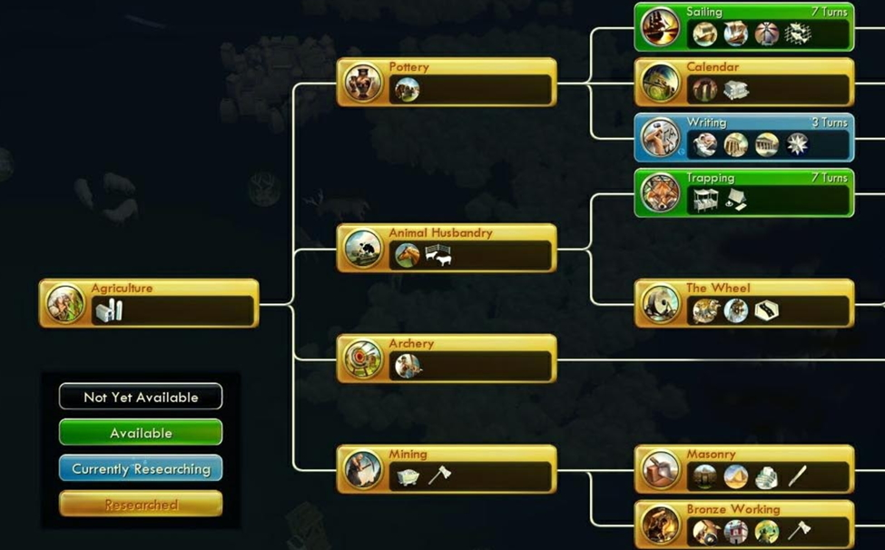

<main>
    <article>
        <!-- <app-map class='map' [regions]='fertileCrescentMap._regions' [rivers]='fertileCrescentMap._rivers'></app-map> -->
        <!-- <app-map class='map' [regions]='emptyOceanMap._regions' [rivers]='emptyOceanMap._rivers'></app-map> -->
        <div class="wrapper">
            <h1 class="main-title">The Root of Civilization</h1>
            <div class="main-title-subtitle">By Michael Crombie</div>
            <section id="introduction">
                <h2 class="section-title">Introduction</h2>
                <p class="paragraph">As my last personal project before going back to full-time work, I wanted to write
                    an
                    essay tying together my experience with farming, passion for history, and programming skills. I
                    realized
                    it was the perfect time to follow through on an idea I have toyed with for years: a simulation of
                    the
                    growth of human societies. You can see a taste below. I will explain how this works later. </p>
            </section>

            <section id="inspiration">
                <h2 class="section-title">Part I: Inspiration</h2>
                <p class="paragraph">For years I have been a fan of the 4X strategy game, <a
                        href="https://civilization.com/" target="_blank"><em>Civilization</em></a>, where you command a
                    civilization (e.g. Egypt, Rome, China, etc) from the dawn of history into the space age. The game is
                    fun
                    but time consuming and addictive. Instead of pouring countless hours into this game, I often
                    wondered
                    what it would be like to develop my own version. Last month, I finally felt ready to follow through.
                    However, modeling the growth of human civilization is a monumental task. I was stuck on where to
                    begin.
                    Fortunately, spending all that time working on farms made me realize every civilization shares one
                    starting point: agriculture. </p>
                <p class="paragraph">I realized <em>Civilization</em> was the most fun when I tuned into the nuances and
                    narratives.
                    It is fascinating watching a city emerge on a small river straddling a lonely desert, to see
                    wilderness
                    transition into farmland and pastures, to see libraries and theaters blossom, even to see the dark
                    side
                    of war and famine. Each round of the game is unique, allowing players to experience fascinating
                    alternative geographic and historical scenarios. Abraham Lincoln could lead the peace-loving Jewish
                    Mongols to explore a hitherto unknown continent. Like my everyday life, I usually got so caught up
                    in
                    winning my own game (my ego) that I stop enjoying the world around me. </p>
                <p class="paragraph">So what if I removed myself as a player? There has been a lot of interest amongst
                    Civ
                    players in <a
                        href="https://www.rockpapershotgun.com/2015/02/20/civilization-streams-are-making-ai-fight/"
                        target="_blank">watching the AI play itself</a>. This trend has resonated with me. Seeing how a
                    world evolves
                    organically can be as fun as playing in it. However, the game is not designed for this. It takes
                    some
                    fenagling to make it work. When I learned about zero-player games from <a
                        href="https://bitstorm.org/gameoflife/" target="_blank">Conway’s Game of Life</a>, I realized
                    it was exactly what I wanted to see for <em>Civilization</em>: a game where players can set the
                    initial
                    state and
                    then sit back to watch the AI unfold history. </p>
                <p class="paragraph">I created this interactive essay to explore my prototype of this concept. The style
                    is
                    based on Kevin Simler’s <a href="https://meltingasphalt.com/going-critical/ "
                        target="_blank"><q>Going Critical</q></a>. He creates a much more elegant progression of his
                    ideas than I
                    do here, and I am grateful for the inspiration. You will see instances of my app as you read. I
                    built it
                    using Angular and Typescript. Veteran programmers may wince at this choice. JavaScript is prone to
                    floating point errors, and probably a poor choice for creating simulations. However, I wanted to
                    learn
                    Angular and make the essay easily accessible online. I may regret it if I continue to develop this
                    project. That is ok. The learning experience has already made it worth it. </p>
            </section>

            <section id="agriculture">
                <h2 class="section-title">Part II: Agriculture</h2>
                <div class="quote-container">
                    <blockquote class="quote-container__quote"><q>Where tillage begins, other arts follow. The farmers
                            therefore are the founders of human
                            civilization.</q></blockquote>
                    <div class="quote-container__attribution">Daniel Webster</div>
                </div>

                <p class="paragraph">Civilization V uses Webster’s quote to introduce the agriculture technology. Below
                    is Civilization V’s technology tree, which visually represents the sequences of upgrades a player
                    can acquire through research. Notice agriculture is the prerequisite technology to begin researching
                    all others. This is not some arbitrary game mechanic. It is based on leading anthropological
                    theories for how civilization emerged. Simulating human civilization is a monumental task, so I
                    narrowed my goal for the first iteration of this project to “The Root of Civilization”: agriculture.
                </p>
                <figure class="figure-container">
                    <a href="https://well-of-souls.com/civ/images/tech_tree3.jpg" target="_blank"></a>
                </figure>
                <p class="paragraph">How does <a href="https://www.bighistoryproject.com/chapters/4#agriculture"
                        target="_blank">agriculture lead to complex human societies</a> exactly? Put simply, it means
                    more food. Early agrarian villages were able to grow enough food to sustain larger populations than
                    their foraging counterparts. Over millennia, innovations like the plow increased the efficiency of
                    farming. Food surpluses freed labor for specialized activities like trade, craftsmanship, art,
                    religion, and government. Eventually towns emerged that provided services like markets, granaries,
                    and temples to nearby villages. These towns evolved into the first cities and the dawn of the first
                    civilizations. </p>
                <p class="paragraph">Modern humans have been around for approximately 200,000 years, but agrarian
                    societies did not emerge until about 12,000 years ago. This begs the question, why did agriculture
                    emerge when it did and not sooner? What made those first humans quit their ancestral lifestyle of
                    nomadic foraging and settle down to till the land? Civilization skips this step by providing players
                    with agriculture to begin with and allowing them to build cities right away. I decided to make this
                    paleolithic phase of human history the starting point of my simulation. So I had to explore how
                    agriculture began.</p>
                <p class="paragraph">Most of human history took place during the Pleistocene (an Ice Age), where bands
                    of foraging humans struggled to survive in harsh conditions. About 12,000 years ago, the earth has
                    become warmer and wetter. Certain regions, particularly in the Fertile Crescent, began to provide
                    abundant resources for groups of foraging humans. The people that lived in these proverbial Gardens
                    of Eden became relatively wealthy. These affluent foragers had enough food that they no longer
                    needed to migrate regularly. They became sedentary. Without the constraints of a nomadic lifestyle,
                    their populations began to swell from dozens to hundreds. Frequent migration into these rich regions
                    added to their numbers. They slowly fell into the trap of sedentism: overpopulation. </p>
                <p class="paragraph">Eventually there were so many people that even the rich land could not sustain all
                    the inhabitants. The region became so crowded there was no open land to migrate to. The affluent
                    foragers were stuck. They had no choice but to look for a way to increase the productivity of the
                    land they were standing on. Using knowledge about plant species from thousands of years of foraging,
                    they were able to domesticate crops for the first time. Domestication is analogous to a symbiotic
                    relationship we create with crops and animals. Humans cultivated an environment where a valuable
                    plant species could proliferate and were able to reap a much larger harvest. Agriculture began. </p>
                <p class="paragraph">There is one more major question: why did agriculture emerge in some places but not
                    others? Agriculture is about domesticating plant and animal species and certain species are more
                    amenable to domestication than others. The Fertile Crescent was the cradle of civilization because
                    it had the most suitable crops and animals for domestication e.g. emmer wheat, einkorn, cows, goats,
                    sheep, etc. Some other crops that catalyzed the development of complex societies include rice (in
                    China), maize (in Mesoamerica), and potatoes (in the Andes). Some crops allowed for limited growth
                    of complex societies like Taro in New Guinea. Variations among these species, such as where they can
                    be grown and what nutrition they provide, are why civilization emerged in the Fertile Crescent and
                    not the Midwest.</p>
            </section>
            <section id="simulation">
                <h2 class="section-title">Part III: The Simulation</h2>
                <p class="paragraph">Now that we have a basic understanding for the theory of why agriculture emerged,
                    it is time to look at the simulation. But before I dive into the technical details of how it works,
                    let’s look at a sample. Below is a map of the Fertile Crescent during the Ice Age. Use the control
                    panel to iterate forward in the simulation, pause or reset. Don’t worry if you don’t understand what
                    is going on yet.</p>
                <app-mini-map class='map' [title]='"Ice Age Fertile Crescent"'
                    [regions]='iceAgeFertileCrescentMap._regions' [rivers]='iceAgeFertileCrescentMap._rivers'>
                </app-mini-map>
                <div class="map-separator">&nbsp;</div>
                <p class="paragraph">The Bands will favor the continental Regions until they are forced into the polar
                    and dry climates. Even with the rivers, they aren’t able to evolve into villages in continental
                    climates.</p>
                <p class="paragraph">This key should help make sense of what is going on.</p>
                <h3 class="subsection-title">Polities Key</h3>
                <p class="paragraph">All Polities start out as Bands. As they develop into Villages and later Towns,
                    they grow faster and have increased farming abilities. In the future, I want to add additional
                    abilities with each evolution of the Polity, such as markets and government centers.</p>
                <ul class="key">
                    <li class="key__item"><i class="icon fa fa-male" aria-hidden="true"></i> - Represents 2 - 50 people
                        in a band of nomadic foragers.</li>
                    <li class="key__item"><i class="icon fa fa-home" aria-hidden="true"></i> - Represents 2 - 500 people
                        in a village of sedentary farmers.</li>
                    <li class="key__item"><i class="icon fa fa-building" aria-hidden="true"></i> - Represents 2 - 5000
                        people in a town.</li>
                </ul>
                <h3 class="subsection-title">Regions Key</h3>
                <p class="paragraph">Regions vary by climate. Different climates have different food yields. In the ufture I
                    would like them to convey advantages aside from food. As of now, there is a clear hierarchy of which
                    climates are the best with temperate being on top.</p>
                <ul class="key">
                    <li class="key__item">
                        <app-tile style="display:inline-block;" [_region]="temperateSample"></app-tile> - Temperate Region
                    </li>
                    <li class="key__item">
                        <app-tile style="display:inline-block;" [_region]="continentalSample"></app-tile> - Continental Region
                    </li>
                    <li class="key__item">
                        <app-tile style="display:inline-block;" [_region]="drySample"></app-tile> - Dry Region
                    </li>
                    <li class="key__item">
                        <app-tile style="display:inline-block;" [_region]="tropicalSample"></app-tile> - Tropical Region
                    </li>
                    <li class="key__item">
                        <app-tile style="display:inline-block;" [_region]="polarSample"></app-tile> - Polar Region
                    </li>
                    <li class="key__item">
                        <app-tile style="display:inline-block;" [_region]="oceanSample"></app-tile> - Ocean Region
                    </li>
                </ul>
                <h3 class="subsection-title">Terrains Key</h3>
                <p class="paragraph">Rivers are the only Terrain objects I have added so far. In the future I would like
                    to include hills, mountains, forests, and jungles.</p>
                <ul class="key">
                    <li class="key__item">
                        <div style="display:inline-block;" class="north-river"></div> - River
                    </li>
                </ul>

                <h3 class="subsection-title">Polities and Regions</h3>
                <p class="paragraph">Using an <a
                        href="https://www.techopedia.com/definition/3235/object-oriented-programming-oop"
                        target="_blank">object-oriented model</a>, the simulation centers on the interaction
                    between two objects: Polities (groups of humans) and Regions (units of land represented by tiles).
                    It progresses in iterations representing years. </p>
                <p class="paragraph">Each Region is positioned on a 12x12 grid. There are 144 Regions in each map. Based
                    on its climate, each Region replenishes a fixed amount of food each turn. However, each climate has
                    a fixed maximum amount of food that accumulates naturally. Climates can be either temperate,
                    tropical, dry, continental, polar, or ocean. Some Regions have rivers that increase food yield from
                    farming. Farming can be done by Polities. There can be zero or one Polities per Region. </p>
                <p class="paragraph">Every Polity has two or more people. Each person requires one food each year.
                    Polities extract food from corresponding Regions each year and consume it. Population grows based on
                    the Polities growth rate which starts at 1%, meaning each person in the Polity has a 1% chance of
                    adding another person. Note this does not guarantee population will grow each year. Fractional
                    population is not possible.</p>
                <p class="paragraph">Let’s take a break from the word walls and look at some examples.</p>
                <app-mini-map class='map' [title]='"Single Continental Region"'
                    [regions]='singleTileContinentalMap._regions' [rivers]='singleTileContinentalMap._rivers'>
                </app-mini-map>
                <div class="map-separator">&nbsp;</div>
                <p class="paragraph">Above is a simplified model of a single Polity and a single Region. The Region has
                    a continental climate, so it generates 10 food each turn and can hold a maximum of 50 food. Once the
                    population grows beyond 10, it will begin to expend the Region’s excess food. Its population will
                    then be limited to ten plus whatever it can farm. With so little space in such a climate, the
                    population won’t exceed much more than 15.</p>
                <p class="paragraph">Every Polity has a subclass: Band, Village, or Town. Simulations begin with a
                    single Band whichever available tile has the most food yield. Movement can be made horizontally,
                    vertically, or diagonally to one of the eight neighboring tiles so long as it exists and is not an
                    ocean. If there is a tie for highest yield, the Band moves randomly. It can also stay in its current
                    tile to farm. Population grows at a rate of 1% per year. When its population can no longer sustain
                    itself on any of the available tiles, a Band divides into two bands. The new Band will move to the
                    tile with the second highest yield. The new Band’s population will be between the number the parent
                    could not feed and half the parent’s population.</p>
                <p class="paragraph">Let’s see what happens if we give the Band more room.</p>
                <app-mini-map class='map' [title]='"Five Continental Regions"'
                    [regions]='fiveTileContinentalMap._regions' [rivers]='fiveTileContinentalMap._rivers'>
                </app-mini-map>
                <div class="map-separator">&nbsp;</div>
                <p class="paragraph">With five continental Regions, the food yield is 50 each year. However, a Band can
                    only occupy a single Region at a time. Each year, the initial Band will forage one tile and migrate
                    to an unused one with more food available. The extra space allows the Band to grow more but once its
                    population exceeds 50 (the maximum natural food storage for continental Regions), it will divide
                    itself into two Bands. In this manner, the entire island will be occupied after a couple centuries,
                    and each Band will be confined to a single tile like in the previous example.</p>
                <p class="paragraph">Over the course of centuries, the map will fill up with Bands of foragers. When a
                    Band has nowhere left to move for additional food, it will begin farming to augment its food supply.
                    Farming allows Polities to increase a Region’s yearly food yield even beyond its natural maximum
                    capacity. Farming yield is determined by the formula:</p>
                <p class="paragraph">(R * (FL + RC) * FY * P) / 100</p>
                <p class="paragraph">Where</p>
                <p class="paragraph">R = random number (between 0 and 1)</p>
                <p class="paragraph">FL = farming level (between 1 and 20)</p>
                <p class="paragraph">RC = river connections (between 0 and 4)</p>
                <p class="paragraph">FY = food yielded naturally from the region (based on climate)</p>
                <p class="paragraph">P = population of the polity</p>
                <p class="paragraph">With farming, Polities dramatically increase the amount of food they can produce,
                    allowing their populations to grow beyond the natural limits of their Region. Their farming level
                    increases the more they farm successfully. However, if they fail to produce enough food to feed
                    their population, the excess people will starve, and their population will decrease. This risk is
                    mitigated by food storage capacity. As farming levels increase, so does the amount of excess food
                    Polities can carry over from year to year. With high yields from farming and starvation mitigated by
                    food storage, Bands will grow to be hundreds of people in size.</p>
                <p class="paragraph">Not every Region is the same though. The continental Regions we have seen up until
                    now
                    don’t allow for Bands to reach high farming levels. That changes in warmer, wetter Regions. </p>
                <app-mini-map class='map' [title]='"Single Temperate Region"'
                    [regions]='singleTileTemperateMap._regions' [rivers]='singleTileTemperateMap._rivers'>
                </app-mini-map>
                <div class="map-separator">&nbsp;</div>
                <p class="paragraph">Temperate Regions generate 20 food per turn and have a natural maximum food of 100.
                    The Polity won’t use up this excess until it has more than 20 people. By then, its farming level
                    will have risen allowing it to sustain a much larger population than the Region could naturally
                    hold. However, the population won’t reach much higher than 200 before starvation ensues. </p>
                <p class="paragraph">So what happens if we create several temperate Regions?</p>
                <app-mini-map class='map' [title]='"Five Temperate Regions"' [regions]='fiveTileTemperateMap._regions'
                    [rivers]='fiveTileTemperateMap._rivers'></app-mini-map>
                <div class="map-separator">&nbsp;</div>
                <p class="paragraph">You can see it is the same dynamic as having five continental Regions except the
                    population is much higher because the and can produce more food and facilitate more advanced
                    agriculture.</p>
                <p class="paragraph">Variations in climate are thus critical. Let’s shake it up and see what an island
                    with five different climates looks like: polar, continental, temperate, dry, and tropical.</p>
                <app-mini-map class='map' [title]='"Five Climates"' [regions]='allClimatesMap._regions'
                    [rivers]='allClimatesMap._rivers'></app-mini-map>
                <div class="map-separator">&nbsp;</div>
                <p class="paragraph">You can see how the Bands favor temperate tiles. Only when their temperate
                    neighbors are depleted will Bands venture into the continental. When they have no other choice, they
                    will move into the dry and polar climates. However, Bands in the dry will be able to discover the
                    more favorable tropical climate, which yields more than continental but still less than the
                    temperate. </p>
                <p class="paragraph">Even with all this room and variation, Bands still stagnate in a single tile. The
                    overall population won’t exceed much more than 1100 before mass starvation. </p>
                <p class="paragraph">We need to introduce a new dynamic to the simulation in order to catalyze the
                    emergence of civilizations. Regions receive a farming bonus for each corner they have that includes
                    a river. Watch what happens to the Bands along the new river, especially in temperate climates. Use
                    the
                    plus button to jump ahead 1000 years or so if you have to. </p>
                <app-mini-map class='map' [title]='"Five Climates & a river"' [regions]='allClimatesRiverMap._regions'
                    [rivers]='allClimatesRiverMap._rivers'></app-mini-map>
                <div class="map-separator">&nbsp;</div>
                <p class="paragraph">Eventually, you will see some of the Bands straddling rivers transition into
                    Villages. The population should not exceed much more than 11,000.</p>
                <p class="paragraph">Bands that reach 500 or more people and are connected to a river evolve into
                    Villages. A Village represents the next stage in the evolution of civilization. It can reach higher
                    farming levels, has a growth rate of 2%, but is incapable of migrating to neighboring tiles when
                    food is scarce like Bands. There is still one more step in the process I am simulating that the map
                    above is too small to reach. </p>
                <p class="paragraph">When a Village reaches a population of 5000 or more and has at least three
                    neighbors that are also Villages, it will evolve into a Town. Towns represent the last stage in a
                    Polity’s development before becoming a City, but that is beyond the scope of this current iteration
                    of the simulation. For now, Towns have no change in functionality from Village besides their visual
                    representation on the map. The emergence of Towns indicates that a Civilization is emerging in that
                    area. “The Root of Civilization” has thus sprouted into a shrub. Since this essay is not entitled
                    “The Shrub of Civilization” that is the culmination of this version of the simulation. </p>
                <p class="paragraph">To see how Villages evolve into Towns, we will go back to historical examples. We
                    will see how this simulation can help us understand how climate changes contributed to the emergence
                    of Sumerian Civilization in the Fertile Crescent.</p>
                <p class="paragraph">Earlier we saw what the Fertile Crescent looked like during the last Ice Age, over
                    15,000 years ago. Not much was going on. With the end of the Ice Age, earth became warmer and
                    wetter. The Fertile Crescent transitioned into an ideal area for civilization to develop. So let’s
                    take a look at what happens in a warmer version of the previous map…</p>
                <app-mini-map class='map' [title]='"Fertile Crescent"' [regions]='fertileCrescentMap._regions'
                    [rivers]='fertileCrescentMap._rivers'></app-mini-map>
                <div class="map-separator">&nbsp;</div>
                <p class="paragraph">We see familiar dynamics. Bands favor temperate climates and multiply until there
                    is no more room. Those Bands trapped into sedentary lifestyles in temperate climates along rivers
                    will develop into Villages. However, a new dynamic emerges. Many villages evolve alongside each
                    other, allowing for larger Villages to evolve into Towns, the precursors to cities. </p>
                <p class="paragraph">The Fertile Crescent was not the only place climate change made suitable for
                    agriculture. Civilizations emerge independently in multiple areas around the globe. I made a couple
                    more historical models to represent the other two areas that we know independently invented writing.
                </p>
                <app-mini-map class='map' [title]='"Ancient China"' [regions]='chinaMap._regions'
                    [rivers]='chinaMap._rivers'></app-mini-map>
                <div class="map-separator">&nbsp;</div>
                <p class="paragraph">Above we can see the growth of Chinese civilization along the Yellow and Yangtze
                    rivers. The earliest evidence of rice cultivation in China dates to about 8,000 years ago.</p>
                <app-mini-map class='map' [title]='"Ancient Mesoamerica"' [regions]='mesoAmericaMap._regions'
                    [rivers]='mesoAmericaMap._rivers'></app-mini-map>
                <div class="map-separator">&nbsp;</div>
                <p class="paragraph">My last example takes us to ancient Mesoamerica. The map here is less elaborate as
                    I am less familiar with the history. The river in the middle is meant to represent ancient Lake
                    Texcoco, where modern Mexico City now stands. </p>
                <h3 class="subsection-title">Conclusion</h3>
                <p class="paragraph">I wrote this essay to prototype what I envisage an approximately accurate
                    simulation for the unfolding of human history that is both educational and fun. The major aspects of
                    this version are migration, population growth, the trap of sedentism, and the influence of climate.
                    Each of these was critical for civilization as we know it to emerge. Of course, there is a lot more
                    to the story than that. In the next section I will explore how I can expand this project in the
                    future.</p>
            </section>
            <section id="future">
                <h2 class="section-title">Part IV: Going Forward</h2>
                <p class="paragraph">I could write an essay twice this size about what I am leaving out of this
                    simulation. When I was designing it a few weeks ago, I had a storm of ideas I have since pared down
                    to population growth and a simple farming equation. Before I wrap up, I’d like to review some of the
                    ideas I have for the future. </p>
                <h3 class="subsection-title">Realistic Populations</h3>
                <p class="paragraph">Ideally, I would like the simulation to have realistic population estimates. If
                    this were the case, each of the historical models I have created above should reach populations into
                    the millions. There is no precise data for this though, but in the I would like to create a world
                    map with a size that makes population growth commensurate with <a
                        href="https://en.wikipedia.org/wiki/World_population#Past_population" target="_blank">these
                        projections</a>. </p>
                <h3 class="subsection-title">Simulation Testing</h3>
                <p class="paragraph">Coming up with clear, reviewable statistics is also on the idea list. I could
                    create an environment divorced from the UI that simply runs the math and outputs results in a CSV
                    file. I could then run hundreds of simulation to test and refine settings until they most closely
                    resemble the real-world data mentioned above. Yet a part of me dreads revisiting computer simulation
                    concepts. My simulations course in college was a mess of Monte Carlo methods in C and the hardest
                    course I ever took. However, applying those principles to this program would be valuable. </p>
                <h3 class="subsection-title">Polity Hierarchy</h3>
                <p class="paragraph">I would also like to play with the design of the Polity object. While reading <a
                        href="https://www.ynharari.com/book/sapiens/" target="_blank"><em>Sapiens</em></a>, Harari
                    mentions a system for classifying human societies in stages: Band &rarr; Tribe &rarr; Chiefdom
                    &rarr; State. This scheme of sociopolitical development is borrowed from <a
                        href="https://www.britannica.com/biography/Elman-Rogers-Service" target="_blank">Elman
                        Service</a>. It struck
                    me as a good system for modeling the development of societies through gradually more advanced object
                    classes. I could add three subclasses to Polity: Tribe, Chiefdom, and State. However, I might have
                    to rethink the current model entirely if I go this route. </p>
                <h3 class="subsection-title">Polity Behavior and Personalities</h3>
                <p class="paragraph">As of now, all of the Polities actions are based around acquiring food. While
                    sustenance is naturally the priority, people can do a lot more than forage and farm. I want to give
                    Bands different personality traits that compel them to make different choices. I want to introduce
                    combat and religion as alternatives to farming. Instead of relying on farming, aggressive bands
                    could pillage their neighbors. There is also a theory for <a
                        href="https://www.bighistoryproject.com/chapters/4#creating-settlements"
                        target="_blank">religion spurring the development of
                        agriculture</a>, but it unclear to me how I will model this. These changes should add a lot more
                    variability and excitement to the simulation.</p>
                <h3 class="subsection-title">Plant and Animal Objects</h3>
                <p class="paragraph">Originally, I wanted to model how the domestication of plant and animal species
                    like emmer wheat and cattle were critical for the development of civilizations. For example, wheat
                    was more adaptable to agriculture than corn, one of the reasons maize growing Mesoamerica took
                    longer to develop than wheat growing Mesopotamia. However, as I realized how big a project this was,
                    I scaled back my goals for this first iteration. Next time, I would like to introduce domesticate
                    crops like wheat, maize, rice, potatoes, and taro. I will also consider domesticate animals like
                    dogs, cattle, goats, and pigs. In line with the <a
                        href="https://cromblog.com/writing-portfolio/book-reviews/botany-of-desire/"
                        target="_blank">coevolutionary theory of domestication</a>, I
                    would like to make these their own objects and not completely subordinate to Polities. </p>
                <h3 class="subsection-title">App Design</h3>
                <p class="paragraph">In this essay, I condensed the original version of the app into a compact mini map
                    that I could include multiple times for demonstrative purposes. The full version is significantly
                    more informative. In my next iteration, I would like to refine it into a standalone web app with an
                    options menu and more features. Including a map maker would be key to making this into a true
                    zero-player game. </p>
                <h3 class="subsection-title">Ending Thoughts</h3>
                <p class="paragraph">I am dreaming up a lot more work for myself. Honestly, I do not know exactly where
                    I am going with this project, but I want it to continue. It is not going to be my main focus like it
                    has been these past few weeks. It is time to get a job before the recession hits. I’ll keep working
                    on this occasionally. At the very least, it will help me refine my coding skills. Yet I have this
                    feeling it will lead to something bigger. </p>
                <p class="paragraph">I’ll end with a note on names. I am particularly fond of “The Root of Civilization”
                    as an essay title. It got me thinking…How about I name each iteration of this project based on the
                    growth a tree. The next one could be a “shrub”, representing the workings of the first towns and
                    cities. Then the next stage could be a “tree”, simulating fully developed agrarian civilizations.
                    After that? I am thinking something like “The Factory of Civilization”, where the tree is being
                    chopped down and used to develop commodities. This would represent the industrial era. After that? I
                    am not so prescient. Appealing names probably should not define my course of development.</p>
            </section>
            <section id="sources">
                <h2 class="section-title">Sources</h2>
                <ul class="source-list">
                    <li class="source-list__source">Diamond, Jared. <em>Guns, Germs, and Steel: The Fate of Human
                            Societies</em>. New
                        York: Norton,
                        1997.</li>
                    <li class="source-list__source">Harari, Yuval. <em>Sapiens: A Brief History of Humankind</em>. New York: Harper, 2015.</li>
                    <li class="source-list__source"><a href="www.bighistoryproject.com" target="_blank"><q>Big History Project</q></a>. Retrieved 2020-02-25.</li>
                    <li class="source-list__source"><a href="https://civilization.com/" target="_blank"><q>Civilization</q></a>. Retrieved 2020-02-25.</li>
                    <li class="source-list__source">Simler, Kevin. <a href="https://www.meltingasphalt.com/interactive/going-critical/" target="_blank"><q>Going Critical.</q></a>, 2019-05-13.</li>
                </ul>
            </section>
        </div>
    </article>
</main>